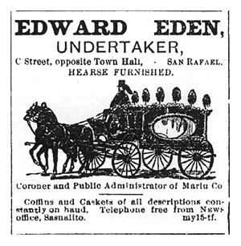

This Marin County Cemetery Locator is intended to locate and list all known past and present cemeteries, graveyards, and family burial plots within the county. When possible, modern photographs are provided of the cemeteries or of the sites of the former cemeteries.
 MARIN COUNTY, CALIFORNIA
CEMETERY LOCATOR
Marin Cemeteries, Past & Present
The Coast Miwok Indians were inhabitants of Marin area for thousands of years. There could be many hundreds of unidentified Miwok burial grounds in the Marin area. In areas of urban development, many Miwok burial grounds have been built upon or paved over. In some areas, homeowners are told, "Don't dig too deeply." There is one known small but active cemetery at Marshall that is attributed to the Miwok.
In 1817, the first Spanish settlement in Marin was established and with it, the Mission San Rafael, an asistencia, or outpost of Mission San Francisco de Asis. For a short while, Mission San Rafael served as a sanitarium mostly for the ill Coastonoan Indian neophytes from San Francisco. In 1822, Mission San Rafael achieved full status as a mission, and had an Indian population at that time of over 1,000. The Mexican secularization of the missions in 1834 lead to the abandonment of Mission San Rafael in 1844.
ANGEL ISLAND ::
Angel Island Post Cemetery, Angel Island Cemetery (relocated, 1947)
BOLINAS ::
Bolinas Cemetery, aka, Briones Graveyard, Mary Magdelena Catholic Cemetery, Druid Cemetery
LAGUNITAS, SAMUEL P. TAYLOR STATE PARK ::
Samuel P. Taylor's gravesite.
MARSHALL / REYNOLDS ::
Miwok Cemetery, aka, Marshall Cemetery
MILL VALLEY ::
Forever Fernwood Cemetery, originally Sausalito Cemetery.
NOVATO ::
Pioneer Park
Rush Family Cemetery
Valley Memorial Park
OLEMA ::
Olema Cemetery
POINT REYES NATIONAL SEASHORE::
Life Saving Station and "G" Ranch Cemetery
SAN ANSELMO ::
Montgomery Chapel, San Francisco Theological Seminary
SAN QUENTIN PRISON ::
San Quentin Prison Cemetery
SAN RAFAEL ::
E Street Cemetery Site at St Paul's Episcopal Church
Marin County Hospital Cemetery, a.k.a. Paupers Cemetery, Marin Farm, &c.
Mission San Rafael Arcangel Cemetery Site
Mount Olivet Cemetery
Mount Tamalpais Mortuary Cemetery
Saint Vincent's School for Boys, Cemetery
SAUSALITO ::
Sausalito History, 1880
Russian Sailors Burials (a quote)
Sailors Cemetery Site, now in Fort Baker (abandoned, no markers)
Sunny Hill Cemetery Site
TOMALES ::
Tomales Catholic Cemetery
Tomales Presbyterian Cemetery
Californios Home Page
© Fred Smoot & Patty Sokolecki Smoot, 2007